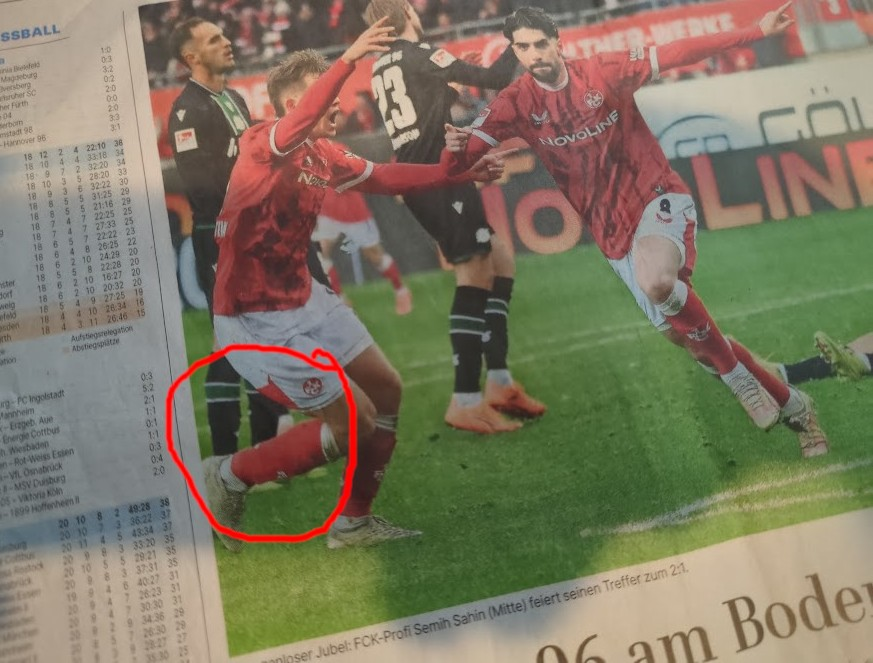

Systematische Desinformation: Wenn Codes zur Nachricht werden
Die Analyse der PAZ-Ausgabe vom 19. Januar 2026 offenbart eine koordinierte Kampagne zur subliminalen Beeinflussung durch den gezielten Einsatz von NS-Symbolik und KI-generierten Inhalten.
Der Fall "SH 33/88 AH"

Abb. 1: Ausschnitt aus einem vermeintlich polizeilichen Dokument mit der Kennung SH 33/88 AH
In einem scheinbar offiziellen Polizeidokument wurde eine Kennung platziert, die statistisch unmöglich durch Zufall entstehen kann. Es handelt sich um eine präzise semantische Injektion von Neonazi-Codes:
"Die Wahrscheinlichkeit, dass diese vier Kürzel zufällig in dieser Kombination auftreten, geht gegen Null. Dies ist kein Redaktionsfehler, sondern psychologische Kriegsführung."
Die "Normalisierung" in der Sporttabelle

Abb. 2: Die manipulierte Fußballtabelle mit den Codes 14, 18 und 88
Auch harmlose Inhalte wie Fußballtabellen wurden als Träger für subliminale Botschaften missbraucht. Durch die Manipulation von Spielergebnissen (z.B. auffällige 8:8 oder 1:8 Resultate) werden Codes wie 14, 18 und 88 unbewusst in den Alltag integriert.
Der technische Beweis: KI-Artefakte

Abb. 3: Eindeutiger KI-Synthesefehler (Tri-Pedie) als Beleg für die synthetische Herkunft
Dass die Inhalte künstlich erzeugt wurden, belegt das Bild des "Spielers mit drei Beinen". Dieser klassische KI-Synthesefehler entlarvt die gesamte Bildserie als synthetisch produziert. Während anatomische Fehler offensichtlich sind, bleibt die semantische Manipulation (die Codes) oft unbemerkt.
Bekenntnis zur "Nazi N.W.O." Kampagne
Die Analyse zeigt, dass diese Codes mehr sind als bloße Platzhalter. In der Fachwelt der Informationskriegsführung dienen sie als "digitaler Handschlag". Durch das Einschleusen dieser spezifischen Trigger signalisieren die Urheber ihre Zugehörigkeit zu einer globalen, extremistischen Vernetzung.
Die gezielte Injektion in eine Lokalzeitung markiert den öffentlichen Raum und signalisiert Gleichgesinnten die erfolgreiche Unterwanderung medialer Strukturen. Es handelt sich um ein Bekenntniszeichen innerhalb einer systematischen Kampagne zur kognitiven Destabilisierung.
Methodik der Analyse
- ▶ Statistische Auswertung von Zeichenkombinationen
- ▶ Forensische Bildanalyse auf KI-Artefakte
- ▶ Psychologische Einordnung von Normalisierungseffekten
Wichtiger Hinweis
Diese Dokumentation dient der Aufklärung über moderne Methoden der Desinformation. Die Identifikation dieser Muster ist der erste Schritt zur kognitiven Verteidigung gegen extremistische Beeinflussung im lokalen Raum.